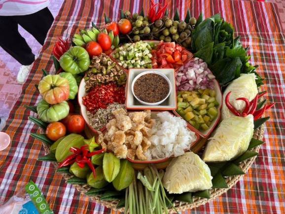
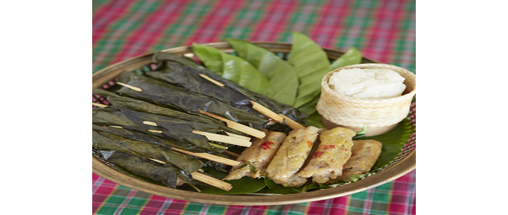
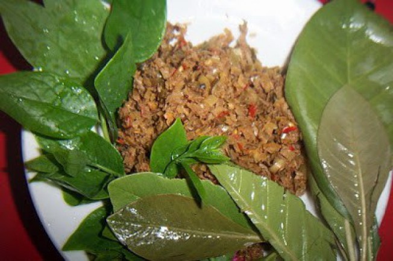

หน้าแรก
เกี่ยวกับจังหวัด
สถานที่เที่ยว
อาหารพื้นที่
นาย อัตพล ยมพ้วย 6404800007
อาหารพื้นที่

เมี่ยงตาสวด หรือ เมี่ยงตาเหลือก
"เมี่ยงตาสวด" 1 จังหวัด 1 เมนู เชิดชูอาหารถิ่น จังหวัดนครพนม หลังจากที่กรมส่งเสริมวัฒนธรรม ได้ประกาศเปิดรายชื่อผลคัดเลือก "1 จังหวัด 1 เมนู เชิดชูอาหารถิ่น" ปี 2566 เพื่อศึกษาประวัติศาสตร์อาหาร ที่มีความสัมพันธ์กับวิถีชีวิตคนไทย และส่งต่อเป็นภูมิปัญญาสืบทอดกันมา เมี่ยงตาสวด หรือ เมี่ยงตาเหลือก เพราะมีเครื่องเคียงค่อนข้างเยอะต้องรับประทานคำใหญ่ ทำให้เวลากินจะต้องอ้าปากกว้าง ตาเหลือกอร่อยเว่อร์

หมกเจาะ
หมกเจาะหรือหมกจ้อ เป็นอาหารพื้นถิ่นของชาวไทญ้อ ในสมัยปู่ย่าตายายไทญ้อ บ้านโพนทำหมกเจาะหรือหมกจ้อกบหมกจ้อเขียด โดยการนำ กบหรือเขียดมาสับให้ละเอียดแล้วนำมาโขลกกับพริกแกงที่เป็นสูตรของชาวไทญ้อโดยเฉพาะ แต่ในปัจจุบันชาวไทญ้อรุ่นใหม่ได้นำเนื้อปลากรายมาทำหมกจ้อเพื่อให้คนที่ไม่ทานกบหรือเขียดก้อสามารถทานหมกจ้อได้

ตำเมี้ยงไทโส้
จวกเมี้ยงตะแวนป่อง (ตำเมี้ยงไทโส้) อาหารประจำธาตุ “ลม” ความเป็นมาของอาหาร เนื่องด้วยชาวไทยโส้เป็นกลุ่มคนที่กินง่ายอยู่ง่าย พืชผัก ผลไม้ สมุนไพรที่ปลูกไว้ในบ้านจึงสามารถนำมาประกอบอาหารได้หมดและอาหารแต่ละอย่างที่ประกอบขึ้นมาล้วนแต่เป็นประโยชน์ต่อร่างกายทั้งสิ้น